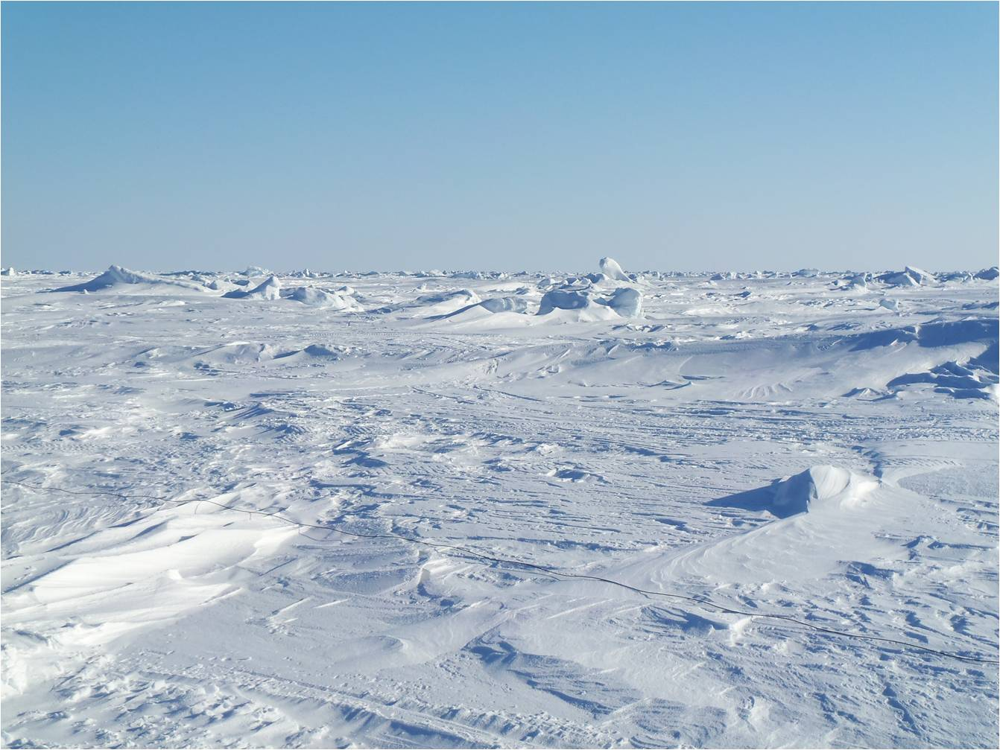
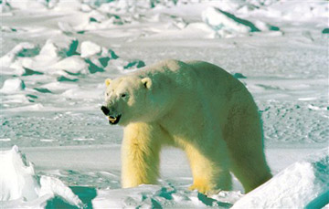

Τα γεωγραφικά πλάτη πάνω από τις 66 μοίρες και 33 λεπτά βορείως ορίζουν την περιοχή που είναι γνωστή ως Αρκτικός Κύκλος. Η περιοχή αυτή καλύπτεται από περίπου 21 εκατ. τετραγωνικά χιλιόμετρα, από τα οποία τα 2/3 κατέχονται από τον Αρκτικό Ωκεανό. Περισσότερο από το μισό του ωκεανού αυτού καλύπτεται το περισσότερο διάστημα από επιπλέοντες πάγους.
Το καλοκαίρι, η θερμοκρασία στην Αρκτική μπορεί να φτάσει τους -38C. Το χειμώνα η θερμοκρασία μπορεί να πέσει εώς και τους -65C. Οι χειμώνες στην Αρκτική έχουν μεγάλη διάρκεια και είναι δριμύτατοι, με το έδαφος παγωμένο τον περισσότερο καιρό. Το καλοκαίρι διαρκεί περίπου 4 μήνες. Κατά το διάστημα αυτό, το έδαφος ξεπαγώνει αρκετά και επιτρέπει έτσι στην υγρασία να φθάνει στις ρίζες των δέντρων και των φυτών. Ο βόρειος εδαφικός χώρος μεταβάλλεται, καθώς κινείστε προς το νότο, από επιπλέοντες πάγους σε πλούσια χλοώδη βλάστηση και σε μια ευρεία δασική λωρίδα. Σε ορισμένα τμήματα, η λωρίδα αυτή, από βορρά προς νότο, έχει βάθος που φθάνει τα 1500 χλμ. Η αφιλόξενη αυτή περιοχή κατέχεται από τον άνθρωπο και τα ζώα από παλαιότερους χρόνους, καθόλη την ιστορία του ανθρώπινου γένους. Ανάλογα με την εποχή του έτους, η Αρκτική είναι πλούσια σε φυτική ζωή, ψάρια και άγρια ζώα.
Συγκριτικά, η ήπειρος της Ανταρκτικής που περιβάλλει το Νότιο Πόλο είναι μια αφιλόξενη περιοχή, σχεδόν χωρίς φυτική ζωή. Οι επιστήμονες έχουν βρει ποικιλία από λειχήνες (είδος φυτών) και ζωή εντόμων, αλλά τα είδη αθτά είναι ανεπαρκή για την διατήρηση της ζωής σε περίπτωση καταστάσεων επιβίωσης. Η ζωτική ζωή περιορίζεται κυρίως σε πουλιά, φώκιες και πιγκουίνους. Οι τελευταίοι περνούν το μεγαλύτερο μέρος της ζωής στο νερό. Ο εδαφικός χώρος είναι μεγαλύτερος, σε έκταση από την Ευρώπη και καλύπτεται πλήρως από πυκνά κομμάτια πάγου, των οποίων το πάχος είναι, κατά μέσο όρο, 2000μ. Η Ανταρκτική είναι πολύ ψυχρότερη από την Βόρεια Αρκτική, με θερμοκρασίες που πέφτουν μέχρι τους -89 βαθμούς Κελσίου και οι οποίες το καλοκαίρι ουδέποτε ανέρχονται πάνω από τους 15 βαθμούς.
Οι άνεμοι στην Ανταρκτική κινούνται με ταχύτητες που φθάνουν μέχρι τα 160 χλμ., σηκώνοντας χιόνι μέχρι ύψους 30μ. Οι επιζώντες πρέπει να παίρνουν μέτρα προφύλαξης από τέτοιες χιονοθύελλες. Εκτός από την έλλειψη ορατότητας, ο άνεμος μειώνει τη θερμοκρασία του αέρα, δημιουργώντας φονικές υποθερμικές συνθήκες. Βραχύχρονη επιβίωση είναι δυνατή, αλλά θα εξαρτάται από την άμεση επαφή με έναν από τους πολλούς σταθμούς επιστημονικών ερευνών που είναι διάσπαρτοι γύρω από το εξωτερικό άκρο της Ανταρκτικής.
 Οι κύριοι παράγοντες από τους οποίους πρέπει να προστατεύομαστε στις πολικές περιοχές είναι οι χαμηλές θερμοκρασίες, ο άνεμος και η κατάσταση του έδαφους. Σύγχρονα υλικά ιματισμού, όπως τα Gore-Tex συνιστούν ιδανικό εξωτερικό προστατευτικό περίβλημα, αλλά και τα εσωτερικά στρώματα ιματισμού είναι ιδανικά. Στις πολικές περιοχές θα χρειάζεστε πολλά στρώματα ιματισμού από κατάλληλα υλικά για ελέγχετε την θερμοκρασία του σώματος. Η αφαίρεση ενός στρώματος ιματισμού μειώνει την θερμοκρασία του σώματος ενώ η προσθήκη την αυξάνει. Με τον τρόπο αυτό ελέγχετε την εφίδρωση των ρούχων και την ύγρανση που φέρονται κατάσαρκα.
Το ταξίδι σε μια περιοχή πολικών κλιματολογικών συνθηκών απαιτεί ειδικό ντύσιμο και εξοπλισμό. Να βεβαιώνεστε ότι η συλλογή των ειδών επιβίωσης που παίρνετε μαζί σας θα περιλαμβάνει πρόσθετα εφόδια για την αντιμετώπιση προτεταιοτήτων που επιβάλλονται από το ψύχος: εξασφάλιση ζεστασιάς και καταφυγίου. Αυτό σημαίνει ότι θα πρέπει να είστε εφοδιασμένοι με ένα κατάλληλο μέσο για το άναμμα φωτιάς, να έχετε αρκετές γερές σακούλες πολυθενίου (πλαστικές) και μερικά κατάλληλα σλύνεργα για ψάρεμα.
Αν βρεθείτε σε αρκτικό περιβάλλον λόγω απρόβλεπτου ατυχήματος, τότε οι προτεραιότητες του εξοπλισμού σας θα περιλαμβάνουν την διάσωση οποιουδήποτε υλικού μπορεί είναι δυνατό να περισυλλεγεί από το κατεστραμμένο αεροπλάνο ή οχημά σας.
Sweden
Standing on top of Abisko watching the aurora dance across the sky… The lights started as a horseshoe-shaped glow in the distance and then dispersed. The glow returned and spread across the sky before ebbing and flowing for several hours. The experience was topped on the walk back to the hotel when the aurora seemed to be sneaking through the trees behind me like naughty imps!”
Mark Champagne, Scandinavia Travel Specialist
Spitsbergen
“Voyaging around Spitsbergen was an incredible experience, but what really made it for me was the opportunity to kayak high above the Arctic Circle. We came face-to-face with walrus, were followed by a curious bearded seal and dive-bombed (unintentionally!) by hundreds of fledging thick-billed murres as they plummeted from sea-cliffs on their first atetmpts to fly. But perhaps, the best of all was the sheer exhilaration of paddling through breash ice, crunching our way through in the shadow of immense glaciers – pure joy!”
Liz Lunnon, Head of Worldwide Product
Iceland
“The protracted dusk that sets Iceland a-glow on summer nights might not quite amount to true midnight sun, but ‘almost’ is definitely good enough here. The long hours of daylight allow you to spend longer exploring Iceland’s numerous beauty-spots and hidden gems, and often you can have the most famous places almost to yourself visiting in the evening or early morning. I loved watching puffins preen and seabirds squawk as the sun finally dipped below the horizon, and it’s incredible light for photographers too.”
Paolo Bonato, Iceland Product Manager
Greenland
“Visiting Ammassalik in East Greenland I was lucky enough to go on a boat trip to spot icebergs. The weather was amazing: bright sunshine and the water clear and calm. We saw bergs up to 15m high and you could also peer over the side of the boat and see how far down under the sea they went. With the sun glistening over the small ripples in the ocean, it was a very beautiful moment and my photos couldn’t quite capture how amazing it actually was.”
Amy Gibbs, Nordic Sales Manager
{kind=link}
{kind=link}
{kind=link}
{kind=link}
{kind=link}
{kind=link}
{kind=link}
{kind=link}